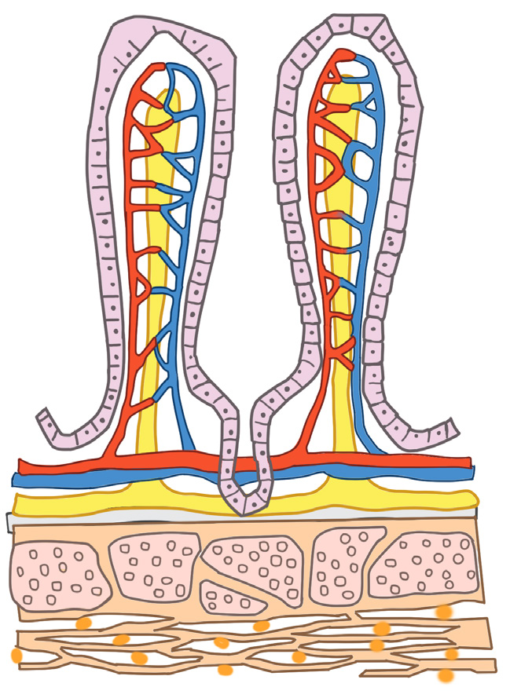
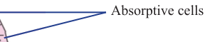

49
Student’s Book - Form Two

Biology for Secondary Schools
(iii) There are various blood capillaries
in the ileum, which join together
to form the hepatic portal vein
that transports blood to the liver.
These blood capillaries ensure that
food is absorbed from the ileum instantly and hence maintain the
diffusion gradient. The liver filters
harmful and toxic substances
(detoxification) and stores fat-
soluble vitamins as well as excess
glucose in form of glycogen.
Other products of digestion are
distributed throughout the body
through the bloodstream.
(iv) The ileum is very long, about
six metres. Therefore, food takes
a long time to pass through the
ileum. This ensures maximum
absorption of the end products of digestion.
(v)
The lining of the ileum is only
one cell thick allowing easier
absorption and diffusion of the
nutrients in the body.
(vi) The inner lining of the ileum wall
is folded forming small finger-like
structures called villi (singular –
villus) as shown in Figure 2.6. The
villi help to increase the surface
area for absorption of the digested
food into the bloodstream.


Absorptive cells
Lacteal
Blood capillaries
Vein
Lymph duct
Artery
Wall of the ileum
Figure 2.6: Structure of villi
08/04/2026 10:18:15